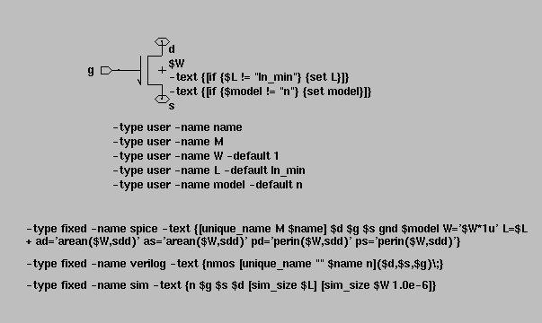
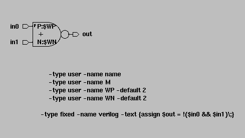

<!DOCTYPE HTML PUBLIC "-//W3C//DTD HTML 3.2 Final//EN">
<html>

<head>
<meta http-equiv="Content-Type" content="text/html; charset=ISO-8859-1">
<meta name="GENERATOR" content="Quadralay WebWorks Publisher Professional Edition 6.0.5">
<meta name="TEMPLATEBASE" content="ManualHTML_Template">
<meta name="LASTUPDATED" content="01/01/02 17:42:09">
<title>Appendix C   </title>
</head>

<body link="#3366CC" vlink="#9999CC" text="#000000" alink="#0000CC" bgcolor="#FFFFFF"
background="images/backgrnd.gif">

<table>
  <tr>
     <td> </td>

	<!-- FOLLOWING ENTRY IS THE TITLE OF THE DOCUMENT -->


<td><center><font color="003366"><H1> SUE Design Manager User Guide </H1></font></center></td>
   </tr>
</table>
<p>

<table width="331" border="0" align="right" cellpadding="0" cellspacing="0">
  <tr>
    <td><a href="SUE_manualTOC.html"> </a></td>
    <td><a href="SUE_ApdxB_EDIF.html"> </a></td>
    <td><a href="SUE_manualIX.html"> </a></td>
    <td><a href="SUE_manualIX.html"> </a></td>
  </tr>
</table>

<p>

</p>

<hr align="left">

<blockquote>
<h2>
  <a name="1013100"> </a><font color="#003366"  face="Verdana, Arial, Helvetica, sans-serif">Appendix C </font>
</h2>


<h2>
  <a name="1030878"> </a><font color="#003366"  face="Verdana, Arial, Helvetica, sans-serif">SUE Installation Including Simulator Interfaces</font>
</h2>

<dl><dl>
<p>
  <dt> <a name="1031584"> </a><font  face="Verdana, Arial, Helvetica, sans-serif">This chapter assumes that you have already installed the SUE Design Manager software, including the correct license file.</font>
<p>
</dl></dl>

<h3>
  <a name="1030880"> </a><font color="#003366"  face="Verdana, Arial, Helvetica, sans-serif">Basic SUE Installation</font>
</h3>

<dl><dl>
<p>
  <dt> <a name="1030881"> </a><font  face="Verdana, Arial, Helvetica, sans-serif">Once you have moved the mmi_local.sample directory to <b><code class="CodeStrong">$MMI_TOOLS/../mmi_local</code></b> as described in the <b><code class="CodeStrong">README</code></b> file,<b><code class="CodeStrong"> </code></b>you are ready to complete the SUE installation. The basic files used to set up the simulator interfaces are listed below.</font>
<p>
      <pre>
&nbsp;&nbsp;&nbsp;&nbsp;&nbsp; <font face="ITC Franklin Gothic Book">			mmi_local</font><a name="1030882"> </a>
&nbsp;&nbsp;&nbsp;&nbsp;&nbsp; <font face="ITC Franklin Gothic Book">				sue</font><a name="1030883"> </a>
&nbsp;&nbsp;&nbsp;&nbsp;&nbsp; <font face="ITC Franklin Gothic Book">					.suerc</font><a name="1030884"> </a>
&nbsp;&nbsp;&nbsp;&nbsp;&nbsp; <font face="ITC Franklin Gothic Book">					spice</font><a name="1030885"> </a>
&nbsp;&nbsp;&nbsp;&nbsp;&nbsp; <font face="ITC Franklin Gothic Book">					adm_go</font><a name="1030886"> </a>
&nbsp;&nbsp;&nbsp;&nbsp;&nbsp; <font face="ITC Franklin Gothic Book">					default_spice_header.h</font><a name="1030887"> </a>
&nbsp;&nbsp;&nbsp;&nbsp;&nbsp; <font face="ITC Franklin Gothic Book">					default_verilog_header.h</font><a name="1030888"> </a>
      </pre>
<p>
  <dt> <a name="1031107"> </a><font  face="Verdana, Arial, Helvetica, sans-serif"><center>
<p>
<table border="1" cellpadding="5" cellspacing="0" width="600">
  <caption><b><i><font face="Verdana, Arial, Helvetica, sans-serif"></font></i></b></caption>
  <tr>
    <td><font face="Verdana, Arial, Helvetica, sans-serif">
<table border="0" cellpadding="10">
<tr>
<td align="center" width="60"></td>
<td valign="center"></td>
</tr>
</table>

<br align="left"></font></td>
    <td><font face="Verdana, Arial, Helvetica, sans-serif"><dl><dl>
<p>
  <dt> <a name="1031112"> </a><font  face="Verdana, Arial, Helvetica, sans-serif">The "<b><code class="CodeStrong">spice</code></b>" and "<b><code class="CodeStrong">adm_go</code></b>" scripts are not in the <b><code class="CodeStrong">mmi_local.sample</code></b> directory. You will need to copy them from the installation directory as described below. As we improve the SPICE and ADM (Star-Sim) interfaces, new version of these scripts are included with the release.</font>
<p>
</dl></dl>
</font></td>
  </tr>
</table>


</center>
<p>
</font>
<p>
<p>
  <dt> <a name="1030890"> </a><font  face="Verdana, Arial, Helvetica, sans-serif">The following is a suggestion for where to put other files used by SUE. The <b><code class="CodeStrong">mmi_local.sample</code></b> directory contains samples of the files listed.</font>
<p>
      <pre>
&nbsp;&nbsp;&nbsp;&nbsp;&nbsp; <font face="ITC Franklin Gothic Book">			mmi_local</font><a name="1030891"> </a>
&nbsp;&nbsp;&nbsp;&nbsp;&nbsp; <font face="ITC Franklin Gothic Book">				sue</font><a name="1030892"> </a>
&nbsp;&nbsp;&nbsp;&nbsp;&nbsp; <font face="ITC Franklin Gothic Book">					mmi25</font><a name="1030893"> </a>
&nbsp;&nbsp;&nbsp;&nbsp;&nbsp; <font face="ITC Franklin Gothic Book">						stdcell</font><a name="1030894"> </a>
&nbsp;&nbsp;&nbsp;&nbsp;&nbsp; <font face="ITC Franklin Gothic Book">							sue</font><a name="1030895"> </a>
&nbsp;&nbsp;&nbsp;&nbsp;&nbsp; <font face="ITC Franklin Gothic Book">						spice</font><a name="1030896"> </a>
&nbsp;&nbsp;&nbsp;&nbsp;&nbsp; <font face="ITC Franklin Gothic Book">							default_spice_header.h</font><a name="1030897"> </a>
&nbsp;&nbsp;&nbsp;&nbsp;&nbsp; <font face="ITC Franklin Gothic Book">							mmi25.l</font><a name="1030898"> </a>
      </pre>
<p>
  <dt> <a name="1031719"> </a><font  face="Verdana, Arial, Helvetica, sans-serif"></font>
<p>
<p>
  <dt> <a name="1030899"> </a><font  face="Verdana, Arial, Helvetica, sans-serif">The <b><code class="CodeStrong">mmi_local/sue/mmi25/stdcell/sue</code></b> directory contains all of the SUE schematics and icons for your standard cell library. You would actually rename <b><code class="CodeStrong">mmi25</code></b> to your current technology name. The two files in the <b><code class="CodeStrong">spice</code></b> directory are the default SPICE header to be used with this technology and the SPICE models for this technology. You might have multiple technologies under the <b><code class="CodeStrong">mmi_local/sue</code></b> directory. </font>
<p>
</dl></dl>

<h3>
  <a name="1030907"> </a><font color="#003366"  face="Verdana, Arial, Helvetica, sans-serif">SPICE Interface</font>
</h3>

<dl><dl>
<p>
  <dt> <a name="1030908"> </a><font  face="Verdana, Arial, Helvetica, sans-serif">Three basic things are needed to run spice from within SUE; the <b><code class="CodeStrong">spice</code></b> script, a default header file and the SPICE models.</font>
<p>
<p>
  <dt> <a name="1030909"> </a><font  face="Verdana, Arial, Helvetica, sans-serif">Look at the spice script provided in <b><code class="CodeStrong">$MMI_TOOLS/sue/spice</code></b>. You need to copy this file to <b><code class="CodeStrong">$MMI_TOOLS/../mmi_local/sue/spice</code></b><font  face="Verdana, Arial, Helvetica, sans-serif"> </font>and edit the following lines:</font>
<p>
<p>
  <dt> <a name="1030910"> </a><font  face="Verdana, Arial, Helvetica, sans-serif">If you have a floating HSPICE license and the command used to invoke HSPICE is simply "<b><code class="CodeStrong">hspice</code></b>", then you shouldn't need to edit anything.</font>
<p>
      <pre>
&nbsp;&nbsp;&nbsp;&nbsp;&nbsp; <font face="Courier"># READ AND MODIFY THIS AREA FOR INSTALLATION</font><a name="1030911"> </a>
&nbsp;&nbsp;&nbsp;&nbsp;&nbsp; <font face="Courier"></font><a name="1030912"> </a>
&nbsp;&nbsp;&nbsp;&nbsp;&nbsp; <font face="Courier"># This is the command that gets run to run spice.  </font><a name="1030913"> </a>
&nbsp;&nbsp;&nbsp;&nbsp;&nbsp; <font face="Courier"># It can be as short as just "hspice".</font><a name="1030914"> </a>
&nbsp;&nbsp;&nbsp;&nbsp;&nbsp; <font face="Courier">set spice_command "hspice"</font><a name="1030915"> </a>
&nbsp;&nbsp;&nbsp;&nbsp;&nbsp; <font face="Courier"></font><a name="1030916"> </a>
&nbsp;&nbsp;&nbsp;&nbsp;&nbsp; <font face="Courier"># Set the hostname to run spice on.  Either specify a hostname here</font><a name="1030917"> </a>
&nbsp;&nbsp;&nbsp;&nbsp;&nbsp; <font face="Courier"># or put $env(HOST) for the local host (i.e. a floating license).</font><a name="1030918"> </a>
&nbsp;&nbsp;&nbsp;&nbsp;&nbsp; <font face="Courier">set hostname $env(HOST)</font><a name="1030919"> </a>
&nbsp;&nbsp;&nbsp;&nbsp;&nbsp; <font face="Courier">#set hostname mmics1</font><a name="1030920"> </a>
&nbsp;&nbsp;&nbsp;&nbsp;&nbsp; <font face="Courier"></font><a name="1030921"> </a>
&nbsp;&nbsp;&nbsp;&nbsp;&nbsp; <font face="Courier"># This is optional.  If you need to setup any variables, </font><a name="1030922"> </a>
&nbsp;&nbsp;&nbsp;&nbsp;&nbsp; <font face="Courier"># do it here.</font><a name="1030923"> </a>
&nbsp;&nbsp;&nbsp;&nbsp;&nbsp; <font face="Courier"># separate commands with semicolons (;).</font><a name="1030924"> </a>
&nbsp;&nbsp;&nbsp;&nbsp;&nbsp; <font face="Courier">set other_commands ""</font><a name="1030925"> </a>
&nbsp;&nbsp;&nbsp;&nbsp;&nbsp; <font face="Courier">#set other_commands \</font><a name="1030926"> </a>
&nbsp;&nbsp;&nbsp;&nbsp;&nbsp; <font face="Courier">"setenv LM_LICENSE_FILE /home/cad/license/hspice/license.file"</font><a name="1030927"> </a>
&nbsp;&nbsp;&nbsp;&nbsp;&nbsp; <font face="Courier"></font><a name="1030928"> </a>
&nbsp;&nbsp;&nbsp;&nbsp;&nbsp; <font face="Courier"># set automounter prefix</font><a name="1030929"> </a>
&nbsp;&nbsp;&nbsp;&nbsp;&nbsp; <font face="Courier"># Optional automounter prefix to remove.</font><a name="1030930"> </a>
&nbsp;&nbsp;&nbsp;&nbsp;&nbsp; <font face="Courier">set auto_prefix "tmp_mnt"
</font><a name="1030931"> </a>
      </pre>
<p>
  <dt> <a name="1030932"> </a><font  face="Verdana, Arial, Helvetica, sans-serif">If you invoke spice with a different command or need to specify a path name to the command, you need to edit the following line to contain the correct SPICE executable or script name.</font>
<p>
      <pre>
&nbsp;&nbsp;&nbsp;&nbsp;&nbsp; <font face="Courier">set spice_command "hspice"
</font><a name="1030933"> </a>
      </pre>
<p>
  <dt> <a name="1030934"> </a><font  face="Verdana, Arial, Helvetica, sans-serif">For example:</font>
<p>
      <pre>
&nbsp;&nbsp;&nbsp;&nbsp;&nbsp; <font face="Courier">set spice_command "/cad/avanti/hspice/98.2/bin/hspice"</font><a name="1030935"> </a>
      </pre>
<p>
  <dt> <a name="1030936"> </a><font  face="Verdana, Arial, Helvetica, sans-serif">If the SPICE license is a nodelocked license, you need to edit the following line to specify the SPICE license server name.</font>
<p>
      <pre>
&nbsp;&nbsp;&nbsp;&nbsp;&nbsp; <font face="Courier">set hostname mmics1</font><a name="1030937"> </a>
&nbsp;&nbsp;&nbsp;&nbsp;&nbsp; <font face="Courier"></font><a name="1031158"> </a>
      </pre>
<p>
  <dt> <a name="1030938"> </a><font  face="Verdana, Arial, Helvetica, sans-serif">You often use the <b><code class="CodeStrong">other_commands</code></b> variable to set up the environment variable used to point to the SPICE license file.</font>
<p>
</dl></dl>

<h4>
  <a name="1030939"> </a><font color="#003366"  face="Verdana, Arial, Helvetica, sans-serif"><em>SPICE Header and Model Files</em></font>
</h4>

<dl><dl>
<p>
  <dt> <a name="1030940"> </a><font  face="Verdana, Arial, Helvetica, sans-serif">Look at the <b><code class="CodeStrong">.suerc</code></b> file in <b><code class="CodeStrong">$MMI_TOOLS/../mmi_local/sue</code></b> and find the line:</font>
<p>
      <pre>
&nbsp;&nbsp;&nbsp;&nbsp;&nbsp; <font face="Courier">set DEFAULT_SPICE_HEADER \</font><a name="1030941"> </a>
&nbsp;&nbsp;&nbsp;&nbsp;&nbsp; <font face="Courier">$env(MMI_TOOLS)/../mmi_local/sue/default_spice_header.h
</font><a name="1030942"> </a>
      </pre>
<p>
  <dt> <a name="1030943"> </a><font  face="Verdana, Arial, Helvetica, sans-serif">This will use the <b><code class="CodeStrong">default_spice_header.h</code></b> file provided in the <b><code class="CodeStrong">mmi_local/sue</code></b> directory. In the example directory structure in the <a href="SUE_ApdxC_setup.html#1030880">Basic SUE Installation</a> section, you would change the above line in your <b><code class="CodeStrong">.suerc</code></b> file to say:</font>
<p>
      <pre>
&nbsp;&nbsp;&nbsp;&nbsp;&nbsp; <font face="Courier">set DEFAULT_SPICE_HEADER \</font><a name="1030947"> </a>
&nbsp;&nbsp;&nbsp;&nbsp;&nbsp; <font face="Courier">        $env(MMI_TOOLS)/../mmi_local/sue/mmi25/spice/default_spice_header.h
</font><a name="1030948"> </a>
      </pre>
<p>
  <dt> <a name="1030949"> </a><font  face="Verdana, Arial, Helvetica, sans-serif">You need to edit this file and modify a number of the parameters. You specifically need to change the line which points to the SPICE device models:</font>
<p>
      <pre>
&nbsp;&nbsp;&nbsp;&nbsp;&nbsp; <font face="ITC Franklin Gothic Book">.include '${MMI_TOOLS}/../mmi_local/sue/g35.mod'
</font><a name="1030950"> </a>
      </pre>
<p>
  <dt> <a name="1030954"> </a><font  face="Verdana, Arial, Helvetica, sans-serif">In the example directory structure in the <a href="SUE_ApdxC_setup.html#1030880">Basic SUE Installation</a> section, you would change this line to say:</font>
<p>
      <pre>
&nbsp;&nbsp;&nbsp;&nbsp;&nbsp; <font face="ITC Franklin Gothic Book">.include '${MMI_TOOLS}/../mmi_local/sue/mmi25/spice/mmi25.l'
</font><a name="1030955"> </a>
      </pre>
<p>
  <dt> <a name="1030956"> </a><font  face="Verdana, Arial, Helvetica, sans-serif">The names of the fet models must match between the SPICE model file (i.e. <b><code class="CodeStrong">mmi25.l</code></b>) and the model name variable in SUE. The fet devices provided with SUE use the model name "n" for an NMOS device and "p" for a PMOS device. If your spice model file uses "nch" and "pch" for example, you have two choices. The first is to edit the SPICE model file and change the model name to "n" and "p".</font>
<p>
<p>
  <dt> <a name="1030957"> </a><font  face="Verdana, Arial, Helvetica, sans-serif">The second choice is to edit the nmos and pmos icons in SUE. First, you need to copy the <b><code class="CodeStrong">$MMI_TOOLS/sue/schematics/spice</code></b> directory to the <b><code class="CodeStrong">mmi_local</code></b> directory and then set the <b><code class="CodeStrong">SCHEM_DIR(spice)</code></b> variable to point to this directory. If you edit the icons in the <b><code class="CodeStrong">$MMI_TOOLS/sue/schematics/spice</code></b> directory, the changes will be lost the next time you install a new release. For example:</font>
<p>
      <pre>
&nbsp;&nbsp;&nbsp;&nbsp;&nbsp; <font face="Courier">cd $MMI_TOOLS/sue/schematics</font><a name="1030958"> </a>
&nbsp;&nbsp;&nbsp;&nbsp;&nbsp; <font face="Courier">cp -rp spice $MMI_TOOLS/../mmi_local/sue/schematics/spice
</font><a name="1030959"> </a>
      </pre>
<p>
  <dt> <a name="1030960"> </a><font  face="Verdana, Arial, Helvetica, sans-serif">Note that in the above example, you'll first need to create the schematics directory before you copy the SPICE directory. Then in your <b><code class="CodeStrong">$MMI_TOOLS/../mmi_local/sue/.suerc</code></b> file, add the following line.</font>
<p>
      <pre>
&nbsp;&nbsp;&nbsp;&nbsp;&nbsp; <font face="Courier">set SCHEM_DIR(spice) $MMI_LOCAL/sue/schematics/spice
</font><a name="1030961"> </a>
      </pre>
<p>
  <dt> <a name="1030962"> </a><font  face="Verdana, Arial, Helvetica, sans-serif">The above command assumes that you've set <b><code class="CodeStrong">MMI_LOCAL</code></b> to <b><code class="CodeStrong">$MMI_TOOLS/../mmi_local</code></b>. For example, you can add the following line to your <b><code class="CodeStrong">.cshrc</code></b> file.</font>
<p>
      <pre>
&nbsp;&nbsp;&nbsp;&nbsp;&nbsp; <font face="Courier">setenv MMI_LOCAL $MMI_TOOLS/../mmi_local
</font><a name="1030963"> </a>
      </pre>
<p>
  <dt> <a name="1030964"> </a><font  face="Verdana, Arial, Helvetica, sans-serif">Now restart SUE and select an nmos device and push into it (hotkey: <b><strong class="Strong">e</strong></b>). You should see something like <a href="SUE_ApdxC_setup.html#1031209">Figure 50</a>.</font>
<p>
<p>
  <dt> <a name="1030968"> </a><font  face="Verdana, Arial, Helvetica, sans-serif">Look for the following two lines:</font>
<p>
      <pre>
&nbsp;&nbsp;&nbsp;&nbsp;&nbsp; <font face="Courier">-type user -name model -default n</font><a name="1030969"> </a>
&nbsp;&nbsp;&nbsp;&nbsp;&nbsp; <font face="Courier">-text {[if {$model != "n"} {set model}]}
</font><a name="1030970"> </a>
      </pre>
<p>
  <dt> <a name="1030971"> </a><font  face="Verdana, Arial, Helvetica, sans-serif">Change them to the following if you model name is "nch".</font>
<p>
      <pre>
&nbsp;&nbsp;&nbsp;&nbsp;&nbsp; <font face="Courier">-type user -name model -default nch</font><a name="1030972"> </a>
&nbsp;&nbsp;&nbsp;&nbsp;&nbsp; <font face="Courier">-text {[if {$model != "nch"} {set model}]}
</font><a name="1030973"> </a>
      </pre>
<p>
  <dt> <a name="1030974"> </a><font  face="Verdana, Arial, Helvetica, sans-serif">You then do the same thing for the pmos device.</font>
<p>
</dl></dl>

<ul>
<h5>
<align="left">
  <a name="1031209"> </a><i><font color="#003366"  face="Verdana, Arial, Helvetica, sans-serif">Figure 50:   Icon For MMI nmos Devices</font></i>
</align>
</h5>
</ul>


<dl><dl>
<p>
  <dt> <a name="1031210"> </a><font  face="Verdana, Arial, Helvetica, sans-serif"><div align="center">
</div></font>
<p>
<p>
  <dt> <a name="1031211"> </a><font  face="Verdana, Arial, Helvetica, sans-serif">If you have problems setting up the SPICE interface, the best way to debug is to run the exact <b><code class="CodeStrong">spice_command</code></b> from a shell window. To do this first generate a SPICE netlist (hotkey: <b><strong class="Strong">shift-n</strong></b>) making sure you're in SPICE simulation mode. Then type the command:</font>
<p>
      <pre>
&nbsp;&nbsp;&nbsp;&nbsp;&nbsp; <font face="Courier">hspice &lt;cell_name&gt;.sp
</font><a name="1030986"> </a>
      </pre>
<p>
  <dt> <a name="1030987"> </a><font  face="Verdana, Arial, Helvetica, sans-serif">You would replace "<b><code class="CodeStrong">hspice</code></b>" with whatever you've set <b><code class="CodeStrong">spice_command</code></b> to in the <b><code class="CodeStrong">spice</code></b> script. Also, if the SPICE license is not floating, you may need to first <b><code class="CodeStrong">rsh</code></b> to the correct machine.</font>
<p>
</dl></dl>

<h3>
  <a name="1030988"> </a><font color="#003366"  face="Verdana, Arial, Helvetica, sans-serif">ADM Interface</font>
</h3>

<dl><dl>
<p>
  <dt> <a name="1030989"> </a><font  face="Verdana, Arial, Helvetica, sans-serif">Avant! Star-Sim is a fast SPICE simulator. It used to be called ADM before Avant! bought it, so the name ADM is still used to run the simulator. Three basic things are needed to run ADM from within SUE; the <b><strong class="Strong">adm_go</strong></b> script, a default header file and the spice models.</font>
<p>
<p>
  <dt> <a name="1030990"> </a><font  face="Verdana, Arial, Helvetica, sans-serif">Look at the SPICE script provided in <b><code class="CodeStrong">$MMI_TOOLS/sue/adm_go</code></b>. You need to copy this file to <b><code class="CodeStrong">$MMI_TOOLS/../mmi_local/sue/adm_go</code></b> and edit the following lines:</font>
<p>
      <pre>
&nbsp;&nbsp;&nbsp;&nbsp;&nbsp; <font face="Courier"># READ AND MODIFY THIS AREA FOR INSTALLATION</font><a name="1030991"> </a>
&nbsp;&nbsp;&nbsp;&nbsp;&nbsp; <font face="Courier"></font><a name="1030992"> </a>
&nbsp;&nbsp;&nbsp;&nbsp;&nbsp; <font face="Courier"># How to call adm executable.</font><a name="1030993"> </a>
&nbsp;&nbsp;&nbsp;&nbsp;&nbsp; <font face="Courier">set adm "adm -n"</font><a name="1030994"> </a>
&nbsp;&nbsp;&nbsp;&nbsp;&nbsp; <font face="Courier"></font><a name="1030995"> </a>
&nbsp;&nbsp;&nbsp;&nbsp;&nbsp; <font face="Courier"># execute any setup commands, such as sourcing adm setup or</font><a name="1030996"> </a>
&nbsp;&nbsp;&nbsp;&nbsp;&nbsp; <font face="Courier"># set the flexlm license variable.  Separate commands </font><a name="1030997"> </a>
&nbsp;&nbsp;&nbsp;&nbsp;&nbsp; <font face="Courier"># with a semicolon (;)</font><a name="1030998"> </a>
&nbsp;&nbsp;&nbsp;&nbsp;&nbsp; <font face="Courier"></font><a name="1030999"> </a>
&nbsp;&nbsp;&nbsp;&nbsp;&nbsp; <font face="Courier">#set setup "source /home/cad/anagram/adm_setup"</font><a name="1031000"> </a>
&nbsp;&nbsp;&nbsp;&nbsp;&nbsp; <font face="Courier">set setup ""</font><a name="1031001"> </a>
&nbsp;&nbsp;&nbsp;&nbsp;&nbsp; <font face="Courier"></font><a name="1031002"> </a>
&nbsp;&nbsp;&nbsp;&nbsp;&nbsp; <font face="Courier"># run adm on the following host.  If node locked to a </font><a name="1031003"> </a>
&nbsp;&nbsp;&nbsp;&nbsp;&nbsp; <font face="Courier"># particular host, set the hostname here.  Otherwise </font><a name="1031004"> </a>
&nbsp;&nbsp;&nbsp;&nbsp;&nbsp; <font face="Courier"># set to $env(HOST).</font><a name="1031005"> </a>
&nbsp;&nbsp;&nbsp;&nbsp;&nbsp; <font face="Courier"></font><a name="1031006"> </a>
&nbsp;&nbsp;&nbsp;&nbsp;&nbsp; <font face="Courier">set host $env(HOST)</font><a name="1031007"> </a>
&nbsp;&nbsp;&nbsp;&nbsp;&nbsp; <font face="Courier">#set host mmics2</font><a name="1031008"> </a>
&nbsp;&nbsp;&nbsp;&nbsp;&nbsp; <font face="Courier"></font><a name="1031226"> </a>
      </pre>
<p>
  <dt> <a name="1031009"> </a><font  face="Verdana, Arial, Helvetica, sans-serif">If you have a floating ADM (Star-Sim) license and the command used to invoke ADM is "<b><code class="CodeStrong">adm -n</code></b>", then you shouldn't need to edit anything.</font>
<p>
<p>
  <dt> <a name="1031010"> </a><font  face="Verdana, Arial, Helvetica, sans-serif">Also, the setup you did for SPICE for the <b><code class="CodeStrong">default_spice_header.h</code></b> and the SPICE model file should work just fine for ADM.</font>
<p>
<p>
  <dt> <a name="1031011"> </a><font  face="Verdana, Arial, Helvetica, sans-serif">Again, if you have problems setting up the ADM interface, the best way to debug is to run the exact <font  face="Verdana, Arial, Helvetica, sans-serif">adm</font> command from a shell window. </font>
<p>
</dl></dl>

<h3>
  <a name="1031012"> </a><font color="#003366"  face="Verdana, Arial, Helvetica, sans-serif">Verilog Interface</font>
</h3>

<dl><dl>
<p>
  <dt> <a name="1031013"> </a><font  face="Verdana, Arial, Helvetica, sans-serif">Look at the <b><code class="CodeStrong">$MMI_TOOLS/../mmi_local/sue/.suerc</code></b> file. You need to edit the following lines to set up Verilog simulation. Three variables need to be set; <b><code class="CodeStrong">VERILOG_PROBE_CMD</code></b><font  face="Verdana, Arial, Helvetica, sans-serif">(interactive)</font>, <b><code class="CodeStrong">VERILOG_CMD</code></b>, and <b><code class="CodeStrong">DEFAULT_VERILOG_HEADER</code></b>. VCS requires different command line switches than most other verilog simulators. So for VCS, you need to uncomment the lines under "<b><code class="CodeStrong"># for vcs</code></b>". For all other Verilog simulators, you should only need to change the name of the program that calls Verilog. The default is simply "verilog".</font>
<p>
      <pre>
&nbsp;&nbsp;&nbsp;&nbsp;&nbsp; <font face="Courier"># Set up your simulator name and where to look for verilog libraries.</font><a name="1031014"> </a>
&nbsp;&nbsp;&nbsp;&nbsp;&nbsp; <font face="Courier">#set VERILOG_PROBE_CMD(interactive) {verilog -s \</font><a name="1031015"> </a>
&nbsp;&nbsp;&nbsp;&nbsp;&nbsp; <font face="Courier">+libext+.vb+.v -y . -y lib.v}</font><a name="1031016"> </a>
&nbsp;&nbsp;&nbsp;&nbsp;&nbsp; <font face="Courier">#set VERILOG_CMD {verilog +libext+.vb+.v -y . -y lib.v}</font><a name="1031017"> </a>
&nbsp;&nbsp;&nbsp;&nbsp;&nbsp; <font face="Courier"></font><a name="1031018"> </a>
&nbsp;&nbsp;&nbsp;&nbsp;&nbsp; <font face="Courier"># for vcs</font><a name="1031019"> </a>
&nbsp;&nbsp;&nbsp;&nbsp;&nbsp; <font face="Courier"># Note: due to a limitation of the vcs cli, you cannot </font><a name="1031020"> </a>
&nbsp;&nbsp;&nbsp;&nbsp;&nbsp; <font face="Courier"># use interactive</font><a name="1031021"> </a>
&nbsp;&nbsp;&nbsp;&nbsp;&nbsp; <font face="Courier"># if your verilog uses the $fopen command.</font><a name="1031022"> </a>
&nbsp;&nbsp;&nbsp;&nbsp;&nbsp; <font face="Courier"># For version 4.1 or earlier use +cli+2</font><a name="1031023"> </a>
&nbsp;&nbsp;&nbsp;&nbsp;&nbsp; <font face="Courier">#set VERILOG_PROBE_CMD(interactive) "vcs -s +cli -O0 -R \</font><a name="1031024"> </a>
&nbsp;&nbsp;&nbsp;&nbsp;&nbsp; <font face="Courier">+libext+.vb+.v -y ."</font><a name="1031025"> </a>
&nbsp;&nbsp;&nbsp;&nbsp;&nbsp; <font face="Courier">#set VERILOG_CMD "vcs -R +libext+.vb+.v -y ."</font><a name="1031026"> </a>
&nbsp;&nbsp;&nbsp;&nbsp;&nbsp; <font face="Courier"></font><a name="1031027"> </a>
&nbsp;&nbsp;&nbsp;&nbsp;&nbsp; <font face="Courier"># filename of default header (.h) file for spice and verilog</font><a name="1031028"> </a>
&nbsp;&nbsp;&nbsp;&nbsp;&nbsp; <font face="Courier">#set DEFAULT_VERILOG_HEADER \</font><a name="1031029"> </a>
&nbsp;&nbsp;&nbsp;&nbsp;&nbsp; <font face="Courier">        $env(MMI_TOOLS)/../mmi_local/sue/default_verilog_header.h</font><a name="1031030"> </a>
&nbsp;&nbsp;&nbsp;&nbsp;&nbsp; <font face="Courier"></font><a name="1031236"> </a>
      </pre>
<p>
  <dt> <a name="1031031"> </a><font  face="Verdana, Arial, Helvetica, sans-serif">If you do not have a floating Verilog license, you would need to edit the <b><code class="CodeStrong">VERILOG_CMD</code></b> lines and add "<b><code class="CodeStrong">rsh hostname cd [pwd]\\;</code></b>" to the front of the Verilog command as shown below.</font>
<p>
      <pre>
&nbsp;&nbsp;&nbsp;&nbsp;&nbsp; <font face="Courier">set VERILOG_PROBE_CMD(interactive) {rsh mmics1 cd [pwd]\\;verilog \</font><a name="1031032"> </a>
&nbsp;&nbsp;&nbsp;&nbsp;&nbsp; <font face="Courier">-s +libext+.vb+.v -y . -y lib.v}</font><a name="1031033"> </a>
&nbsp;&nbsp;&nbsp;&nbsp;&nbsp; <font face="Courier">set VERILOG_CMD {rsh mmics1 cd [pwd]\\;verilog +libext+.vb+.v \</font><a name="1031034"> </a>
&nbsp;&nbsp;&nbsp;&nbsp;&nbsp; <font face="Courier">-y . -y lib.v}</font><a name="1031035"> </a>
      </pre>
</dl></dl>

<ul>
<h5>
<align="left">
  <a name="1031045"> </a><i><font color="#003366"  face="Verdana, Arial, Helvetica, sans-serif">Figure 51:   Icon For nand2</font></i>
</align>
</h5>
</ul>


<dl><dl>
<p>
  <dt> <a name="1031243"> </a><font  face="Verdana, Arial, Helvetica, sans-serif"><div align="center">
</div></font>
<p>
<p>
  <dt> <a name="1031046"> </a><font  face="Verdana, Arial, Helvetica, sans-serif">The <b><code class="CodeStrong">lib.v</code></b> file contains the verilog behavioral models for your standard cell library. If you're using the gates provided in the SUE Tutorial and in the<b><code class="CodeStrong"> mspice library</code></b>, the icons include the behavioral models as shown in <a href="SUE_ApdxC_setup.html#1031045">Figure 51</a>. The following line defines the Verilog model for a nand2:</font>
<p>
      <pre>
&nbsp;&nbsp;&nbsp;&nbsp;&nbsp; <font face="Courier">-type fixed -name verilog -text {assign $out = !($in0 &amp;&amp; $in1)\;}
</font><a name="1031050"> </a>
      </pre>
<p>
  <dt> <a name="1031051"> </a><font  face="Verdana, Arial, Helvetica, sans-serif">If after uncommenting and editing the above lines in the <b><code class="CodeStrong">.suerc </code></b>file, you cannot get Verilog to run from within SUE, the best way to debug is to generate a netlist (hotkey: <b><strong class="Strong">shift-n</strong></b>) making sure you're in <b><code class="CodeStrong">Verilog simulation</code></b> <b><code class="CodeStrong">mode</code></b>. Then, from a shell window, type in the exact command that is in your <b><code class="CodeStrong">.suerc</code></b> file adding the netlist name to the end of the command.</font>
<p>
<p>
  <dt> <a name="1029311"> </a><font  face="Verdana, Arial, Helvetica, sans-serif"></font>
<p>
</dl></dl>
</blockquote>

<hr>

<table align="left" border="0" cellspacing="0" cellpadding="0">
  
  <tr>
    <td align="left"><font size="1">
    <b> -----  Micro Magic  -----   
  </b>
  </td>
  </tr>

</table>

<table width="331" border="0" cellpadding="0" cellspacing="0" align="right">
  <tr>
    <td><a href="SUE_manualTOC.html"> </a></td>
    <td><a href="SUE_ApdxB_EDIF.html"> </a></td>
    <td><a href="SUE_manualIX.html"> </a></td>
    <td><a href="SUE_manualIX.html"> </a></td>
  </tr>
</table>

</body>
</html>
